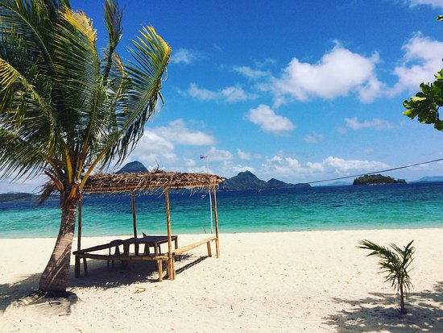
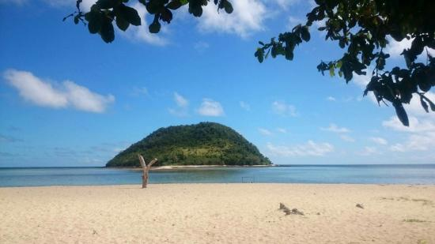

White Sand Beaches
Venture outside the city to experience Iloilo’s friendly countrysides and hidden gems. Iloilo Province is filled with many natural and cultural spots worth exploring. Picturesque beaches are scattered across the seafood rich waters of Northern Iloilo where the islands of Gigantes , Concepcion, Ajuy, and Sicogon beckon. The southern coast of Iloilo is lined well-preserved marine sanctuaries and many of the province’s oldest churches including Miagao Church and San Joaquin Church. For nature lovers, there are many refreshing waterfalls, hiking trails, and cool highland areas in Iloilo’s central mountains, just waiting to be discovered.
 